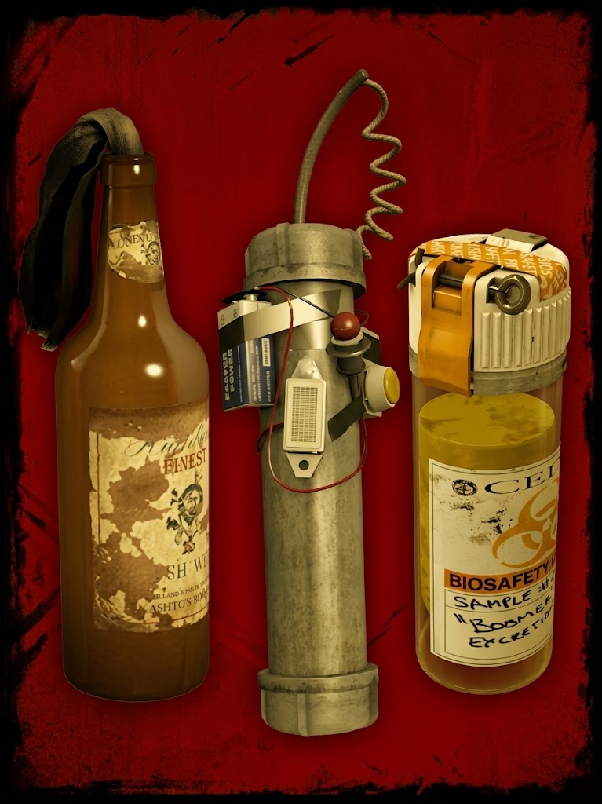

Objetos Arrojadizos
Los objetos arrojadizos son herramientas tácticas de un solo uso que ocupan la tercera ranura del inventario. Son esenciales para la supervivencia, ya que permiten a los jugadores controlar multitudes masivas, bloquear el paso de los enemigos mediante áreas de negación, o proporcionar valiosos segundos de distracción para rescatar a un compañero caído. Los supervivientes solo pueden llevar un objeto arrojadizo a la vez, por lo que elegir el adecuado según la situación es clave.

Bomba Casera (Pipe Bomb)
Descripción y Función: Un tubo de metal relleno de pólvora negra con un temporizador y un parpadeante diodo rojo acoplado. Al lanzarla, la bomba emite un sonido rítmico de alta frecuencia. Los zombis comunes se sienten instintivamente atraídos por la luz y el ruido, abandonando cualquier ataque para agruparse alrededor del objeto. Tras unos breves segundos, la bomba detona, volando en pedazos a todos los infectados en un amplio radio.
Efectos Tácticos: Es ideal para despejar el camino durante eventos de clímax o cuando un compañero está rodeado. Sin embargo, no tiene ningún efecto de atracción sobre los Infectados Especiales ni el Tank.

| Curiosidades: Bomba Casera | Detalle |
|---|---|
| Interacción con el Entorno | La explosión es lo suficientemente fuerte como para activar alarmas de coches cercanos si detona cerca de ellos. |
| Límites de Atracción | Los zombis perderán el interés en la bomba si un superviviente los rocía con un Frasco de Bilis al mismo tiempo. |
Cóctel Molotov
Descripción y Función: Una simple botella de vidrio rellena de líquido altamente inflamable con un trapo encendido en el cuello. Se rompe inmediatamente al impactar contra cualquier superficie (incluso en el aire si choca con un infectado), creando una extensa alfombra de fuego. Cualquier infectado común que toque las llamas morirá incinerado instantáneamente.
Efectos Tácticos: Su función principal es la "negación de área", bloqueando pasillos, escaleras o puertas para evitar el avance de la horda. Es el arma más letal contra el Tank, ya que al prenderle fuego su salud comienza a drenarse de manera constante y, en las campañas, reduce ligeramente su velocidad de movimiento.

| Curiosidades: Cóctel Molotov | Detalle |
|---|---|
| Daño Amigo | Es el objeto que más daño accidental causa. Atravesar las llamas propias o de un compañero drena la salud drásticamente. |
| Witches en Llamas | Lanzarle un Molotov a una Witch la encenderá y la alterará al instante, haciéndola correr erráticamente, pero no reduce su capacidad de daño. |
Frasco de Bilis (Bile Jar)
Descripción y Función: Un frasco de recolección de muestras de la CEDA (Agencia de Control de Emergencias y Defensa) lleno de vómito extraído de un Boomer. Al romperse, salpica la feromona mutada por toda el área de impacto. Esto confunde a los infectados comunes, induciéndolos a un frenesí agresivo que los lleva a atacar el punto exacto de impacto e incluso a atacarse entre ellos si están manchados.
Efectos Tácticos: Es excelente para lanzarlo al vacío o lejos del equipo para desviar grandes hordas y escapar corriendo. Si se lanza directamente contra un Infectado Especial o el Tank, toda la horda común centrará sus ataques en esa criatura, causando un gran daño de apoyo.

| Curiosidades: Frasco de Bilis | Detalle |
|---|---|
| El Efecto Contraproducente | Lanzarlo invoca zombis adicionales al mapa. Nunca debe usarse durante "eventos de pánico" infinitos donde la prioridad es solo correr al refugio. |
| Combo Letal | Lanzar un Frasco de Bilis a una zona y posteriormente un Molotov en el mismo lugar garantiza incinerar a decenas de infectados simultáneamente. |